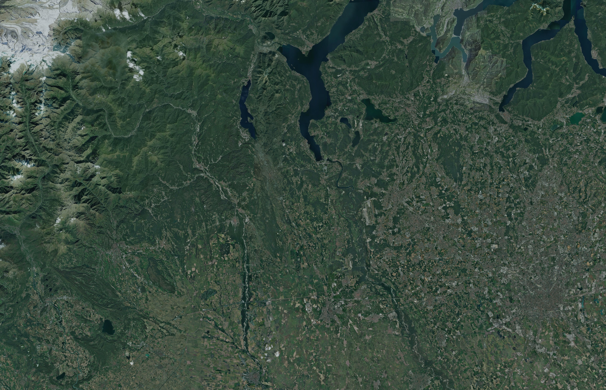
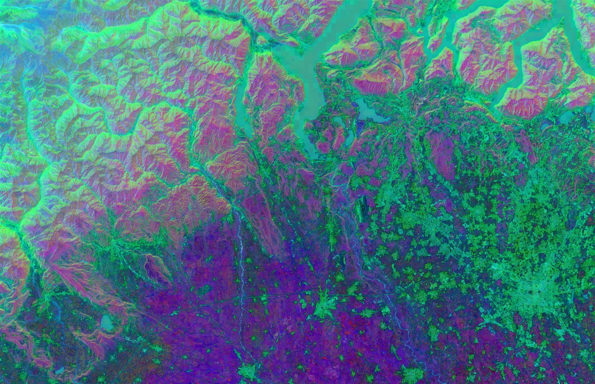

/
Solución · Agentes Geo AI
Construimos agentes de IA que leen tus capas geoespaciales, razonan sobre ellas y actúan. De la estrategia a la puesta en producción, para que tu organización decida con datos y no con intuición.
Con la confianza de equipos de ciencia y gobierno


Por qué Darwin
+2.4M
Historial real: +12 proyectos entregados y +600.000 líneas de código al servicio de la naturaleza.
Propios
Entrenamos nuestras propias redes para leer cada píxel. Sabes qué mide el modelo y por qué.
Cerco
Cada agente tiene límites claros: hace su trabajo y se detiene ante lo que debe decidir un humano.
GCP
Desplegamos en Google Cloud y Earth Engine, con datos alineados en espacio y tiempo, listos para producción.
Nuestra familia de agentes
Algunos operan dentro de Darwin, otros los construimos a medida para clientes. Elige uno para ver qué hace.
 Asistente conversacional
Asistente conversacional
Un asistente conversacional sobre un visor: cruza capas por territorio, interpreta el paisaje y responde preguntas sin necesidad de GIS. Vive en Darwin Maps y explica cada respuesta con el mapa, el número y la fuente detrás.
 Automatización de documentos
Automatización de documentos
Toma un encargo o un briefing y produce un documento a medida: elige los ejemplos relevantes, los ajusta al caso y arma el entregable. Nunca inventa: si algo no encaja, se detiene y avisa para que decida una persona.
 Ventas y CRM
Ventas y CRM
Descubre oportunidades, las puntúa contra un catálogo y mantiene un registro vivo en sincronía con el correo. Una única fuente de verdad, siempre al día, sin dejar que nada se enfríe por olvido.
 Vigilancia
Vigilancia
Rastrea fuentes en volumen, puntúa cada elemento por relevancia y encamina solo lo que importa al siguiente paso. Ideal para vigilar cambios en el territorio o filtrar señal del ruido.
Cómo trabaja un agente


01
El agente ingiere imágenes de satélite, radar, LiDAR, clima y tus propios datos, alineados en el espacio y el tiempo.
02
Modelos propios segmentan, clasifican y miden. El agente detecta el cambio, lo cuantifica y lo pone en contexto.
03
Preguntas en lenguaje natural, respuestas con el mapa, el número y la fuente detrás. Sin GIS, sin código.
04
Genera el informe, prepara la propuesta, actualiza el registro o dispara la alerta. El agente cierra el bucle.
Agentes en acción
Un agente no solo responde: entiende una tarea, la planifica y la ejecuta paso a paso. Así se ve la clase de autonomía que construimos.
Qué construimos
Pregunta al territorio en lenguaje natural sobre tus propias capas.
Del dato al documento: informes y propuestas listos para enviar.
Vigilancia continua con alertas cuando algo cambia en el terreno.
Conectamos con tu correo, tu GIS y tus bases de datos.
Cada agente tiene límites claros: hace su trabajo y se detiene ante lo que debe decidir un humano.
No solo llamamos a una API: entrenamos modelos para leer cada píxel.
Hectáreas analizadas
Líneas de código
Años reconstruidos
Proyectos entregados
El siguiente paso
Cuéntanos qué trabajo repetitivo o qué pregunta sobre el territorio te quita tiempo. En una llamada te decimos si un agente puede resolverlo.
Agenda una llamada